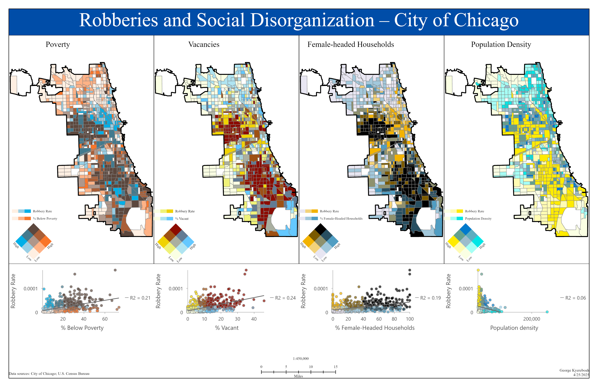

Selected Projects
WIU Campus Cartographic Map
Designed a detailed campus map using advanced cartographic principles, terrain styling, symbol hierarchy, and visual balance. Integrated hydrography, transportation, land cover, and built environment layers to produce a publication-quality layout.

Tools: ArcGIS Pro, Layout Design, Symbology, Spatial Data Integration
Robberies and Social Disorganization – Chicago
Conducted spatial analysis examining the relationship between robbery rates and socioeconomic indicators including poverty, vacancy rates, female-headed households, and population density. Produced multivariate choropleth maps and statistical scatterplots to identify spatial correlation patterns.

Tools: ArcGIS Pro, Spatial Statistics, Bivariate Mapping, Data Visualization